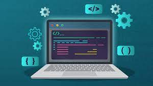
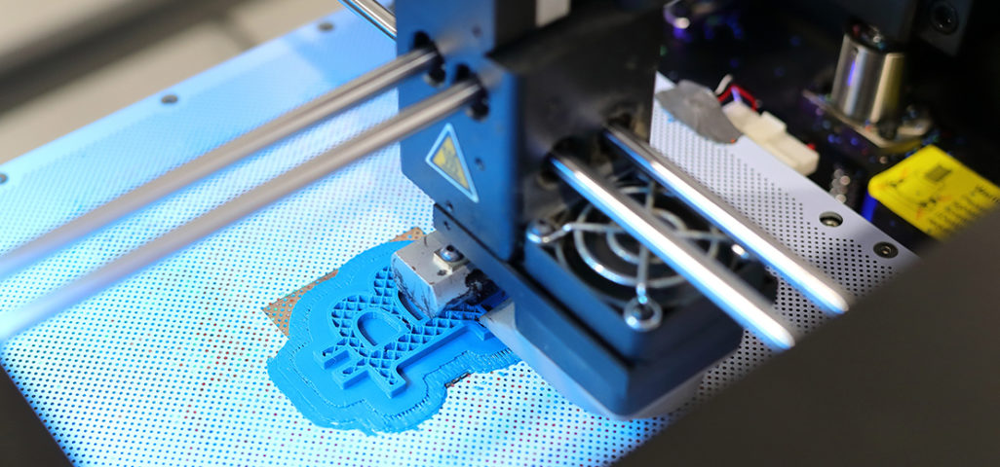
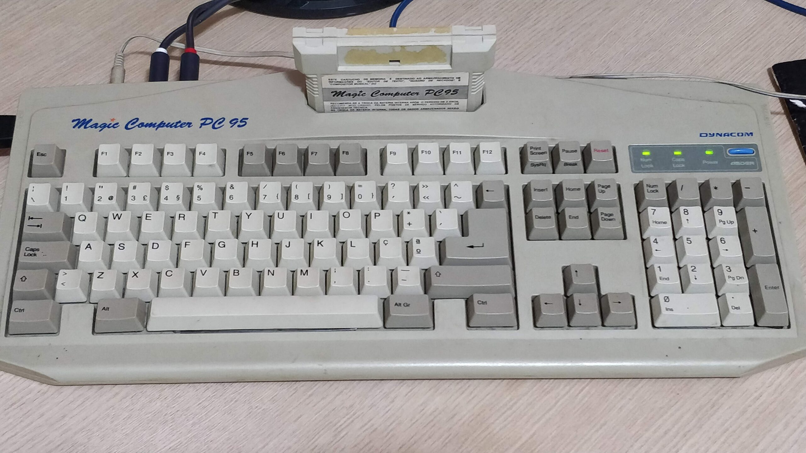

Olá!!
Meu nome é Gabriel Luiz Back, natural de Joinville/SC, tenho 32 anos.
Gosto de programação, desde pequeno e apliquei alguns projetos ao decorrer da minha carreira, em outra área, para facilitar e automatizar tarefas.
Atualmente sou programador CAM no software Cimatron em uma ferramentaria de Pirabeiraba.
Tenho dois hobbies que merecem ser destacados e que me acompanham a um bom tempo.
Ganhei meu primeiro computador por volta dos 12 anos de idade e desde então sempre quis saber como as coisas funcionavam por trás do monitor, teclado e mouse. Essa curiosidade me despertou o interesse pela programação ainda quando criança.
Descobri a impressão 3d por um acaso, achei muito interessante, por se tratar de uma maquina cnc, da qual eu ja estava familiarizado, devido minha profissão que por muito tempo foi fresador CNC.
Aprendi a digitar quanto tinha um pouco menos de 10 anos em um Magic Computer Pc 95.
